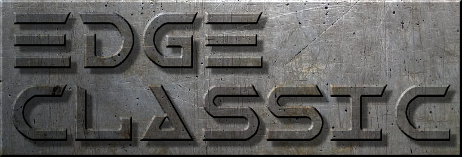

home
news
play
projects
download
documentation
github repo
about
discord
Pre-built packages are available for both 32-bit and 64-bit Windows platforms.
EDGE-Classic v1.33 - 64-bit MSVC
build.
Suitable for Windows Vista and up. May require installing the
Microsoft Visual C++ Redsitributable
.
Download edge-classic-win64.zip
EDGE-Classic v1.33 - 32-bit MinGW
build.
Suitable for Windows XP and up. Pentium 4 minimum CPU required. Has all required libraries included.
Download edge-classic-win32.zip